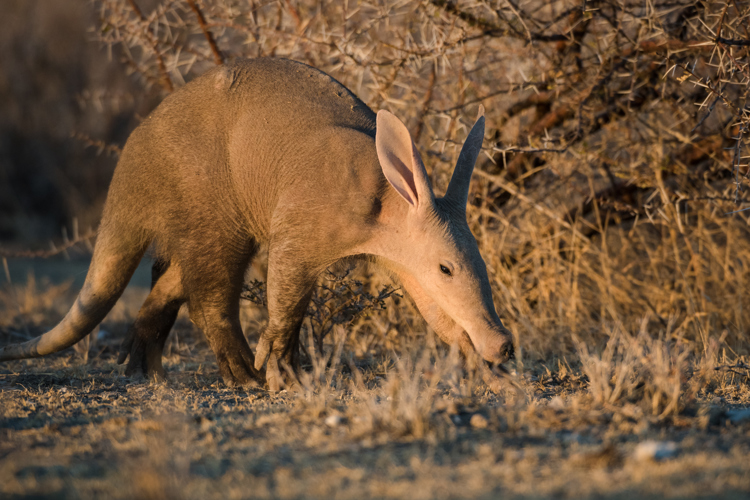
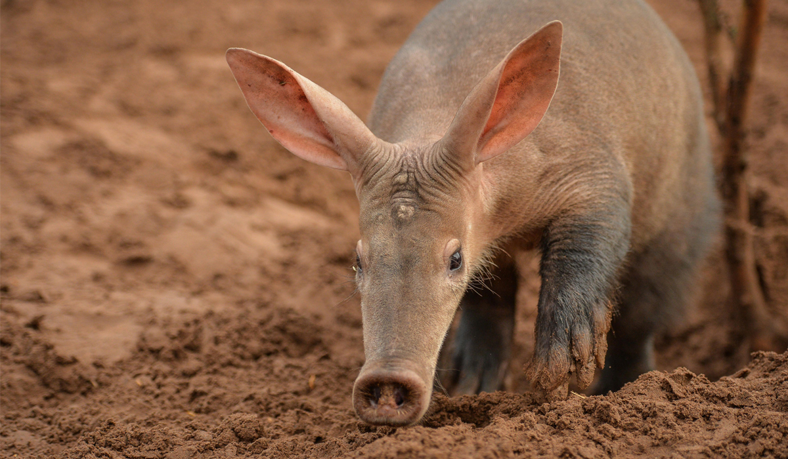
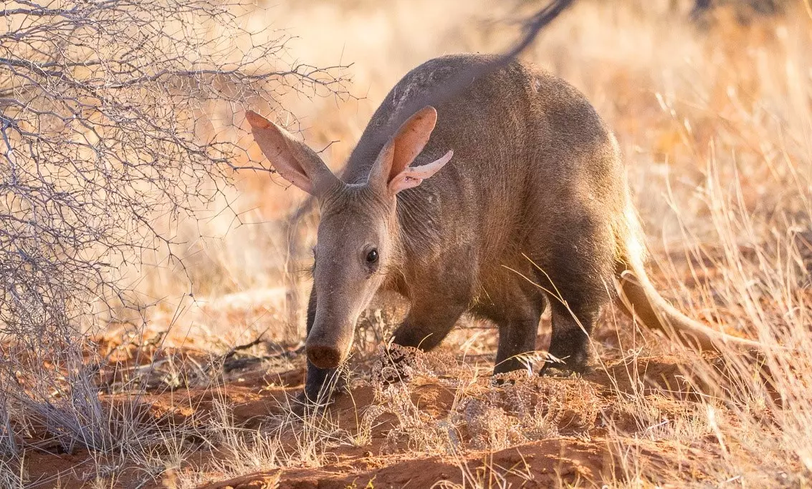
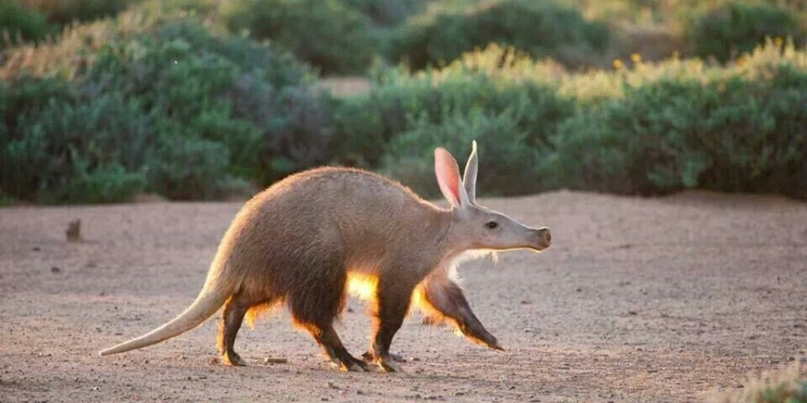

The aardvark is a nocturnal mammal known for its pig-like snout and powerful digging claws. It primarily feeds on ants and termites, using its long sticky tongue to capture prey. Despite its appearance, it is unrelated to pigs or anteaters.


